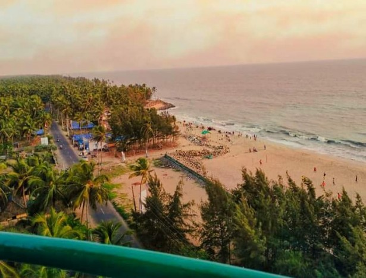

THRISSUR
The fourth largest city in Kerala, Thrissur or Trichur is the ‘Cultural Capital’ of God’s Own Country. The once a capital of the Kingdom of Cochin, this metropolis is a plethora of history, rustic cultures, devout beliefs, and colourful traditions. Known to be one of the most pious tourist destinations in Kerala, this scenic city is dotted with pious temples, and is a home to some of the most gala festivals in the entire state. The city also serves as an ideal destination to learn Hindu religion.
Tracing back the history of Thrissur, it has been found that the city was one of the earliest human settlements in the country. Researchers and historians got evidences of early human settlements around sites like Ramavarmapuram, Kuttoor, Cherus, and Villadam. Trichur also served as an important trade centre during the medieval period, and was ruled by the Dutch rulers, Hyder Ali, Tipu Sultan, East India Company, and finally came to the hands of the Indian Government.

1. PUNNATHUR KOTTA

Punnathur Kotta, a recognised elephant sanctuary which is about 3 km from the Guruvayur Temple. You simply cannot miss this place to visit in Thrissur as it is one of the fun experiences that you will get to witness. As an animal lover, you would be thrilled to see the treatment these elephants receive in the sanctuary.
2. ATHIRAPPALLY WATERFALLS
About 60 km from the main city of Thrissur is the famous Athirapally waterfall. The falls are often compared with Niagara Falls of the US and Canada. Well, one glance and you would be convinced with the comparison as it surely is India's Niagara Falls! What makes the falls scintillating are the greenscape surrounding it as the water flows down the Anamudi Mountains. It is easily one of the top places to visit near Thrissur
3. SHAKTHAN THAMPURAN PALACE

The list of places to visit in Thrissur would be incomplete without the addition of Shakthan Thampuran Palace. The palace was constructed by Raja Ram Varma IC in the year 1791. The white-hued palace with its marvellous Dutch-style architecture would leave you dumbstruck. Further, there are relics and antiquities that would further pique your interest.
4. CHAVAKKAD BEACH

Thrissur also has beaches to contribute to the coastal state of Kerala. Chavakkad Beach which is part of the Malabar Coast, has pristine blue waters of the Arabian Sea to boast and to attract tourists. The quaint and clean beach also counts as one of the best places to visit in Thrissur. Kick off your heels and relax by the shore of the beach. Let the beauty of the sunset take away all your stress.